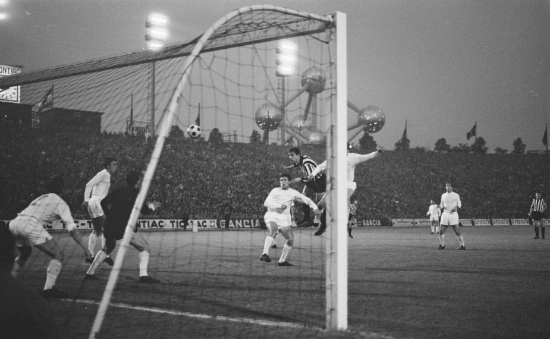
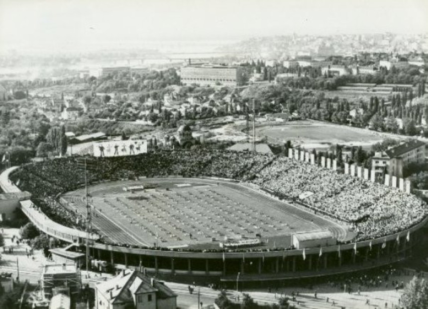

Početak slavne tradicije
FK Partizan osnovan je 4. oktobra 1945. godine kao deo Jugoslovenske armije. Ime je dobio po partizanskim borcima iz Drugog svetskog rata. Klub je vrlo brzo postao jedan od najznačajnijih sportskih kolektiva u zemlji.
Uspon kroz decenije
Najveći evropski uspeh ostvario je 1966. godine, kada je Partizan stigao do finala Kupa šampiona (današnja Liga šampiona), gde je poražen od Real Madrida rezultatom 2:1 u Briselu. To je bio prvi jugoslovenski klub koji je igrao u finalu najprestižnijeg evropskog takmičenja.
Stadion i navijači
FK Partizan svoje domaće utakmice igra na stadionu u Humskoj ulici, koji nosi naziv „Stadion Partizana” ili od pre "Stadion JNA", poznat i kao "Hram fudbala", otvoren je 1949. godine. Navijačka grupa Grobari osnovana je 1970-ih i od tada predstavlja srce tribina i važe za jedne od najvernijih i najstrastvenijih u regionu.
